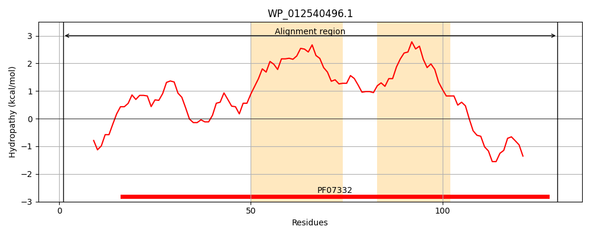
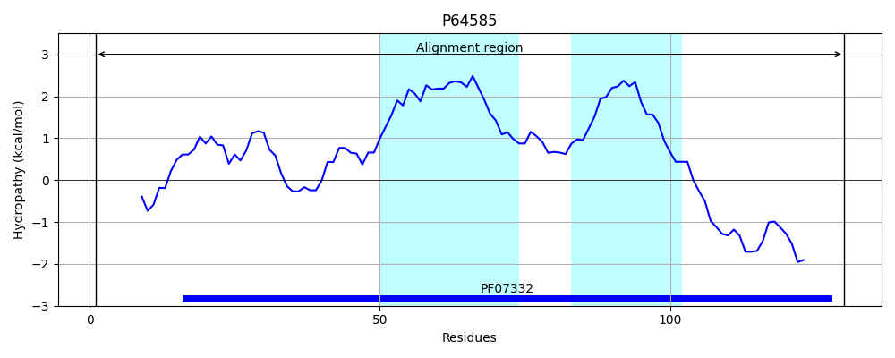
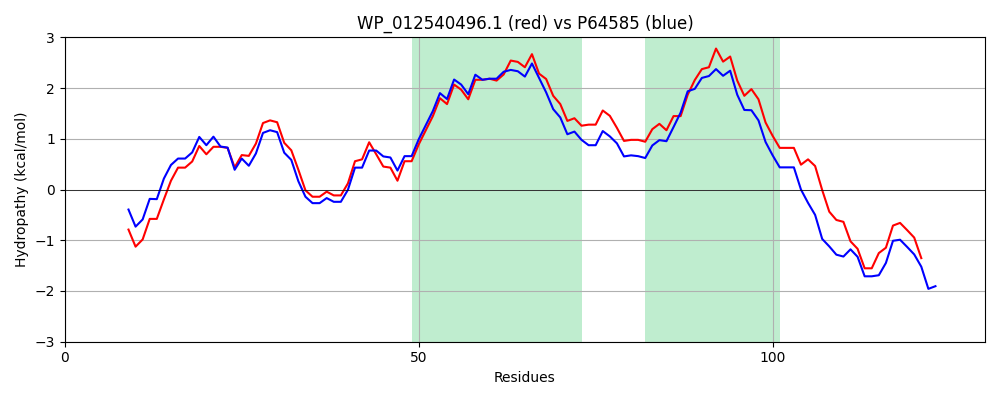

Hit Accession: P64585
Hit TCID: 1.E.34.2.1
Hit Description: gnl|BL_ORD_ID|11208 gnl|TC-DB|P64585|1.E.34.2.1 Inner membrane protein YqjE OS=Escherichia coli (strain K12) GN=yqjE PE=1 SV=1
Mach Len: 130
e:0.000000
Query TMS Count : 2
Hit TMS Count: 2
TMS-Overlap Score: 2.250000
Predicted Substrates:None
BLAST Alignment:
Score: 483 , Bit scores: 190 bits, E-value: 6.6e-64, Alignment length: 130, Percentage identity: 76
Query: 1 MANTQHTQGPGQRVFSIGQRIVTLLVEMVETRLRLVVVELEEEKANLFQLLIMTGLTLLFAAFGLMSLLVLVIWAVDAQYRLHVMIATTVVLLLAAAIVGILTLRKARRSTLLRLTRKELENDRALLEDD 130
MA+T H QGPG+ V IGQRIV+++VEMVETRLRL VVELEEEKANLFQLL+M GLT+LFAAFGLMSL+VL+IWAVD QYRL+ MIATTVVLLL A I GI TLRK+R+STLLR TR EL NDR LLE++
Sbjct: 1 MADTHHAQGPGKSVLGIGQRIVSIMVEMVETRLRLAVVELEEEKANLFQLLLMLGLTMLFAAFGLMSLMVLIIWAVDPQYRLNAMIATTVVLLLLALIGGIWTLRKSRKSTLLRHTRHELANDRQLLEEE 130 | Protein Hydropathy Plots: |
|---|
|  |  |
Pairwise Alignment-Hydropathy Plot:
|
|---|
|  |